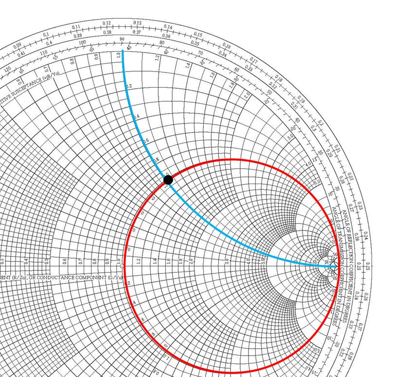
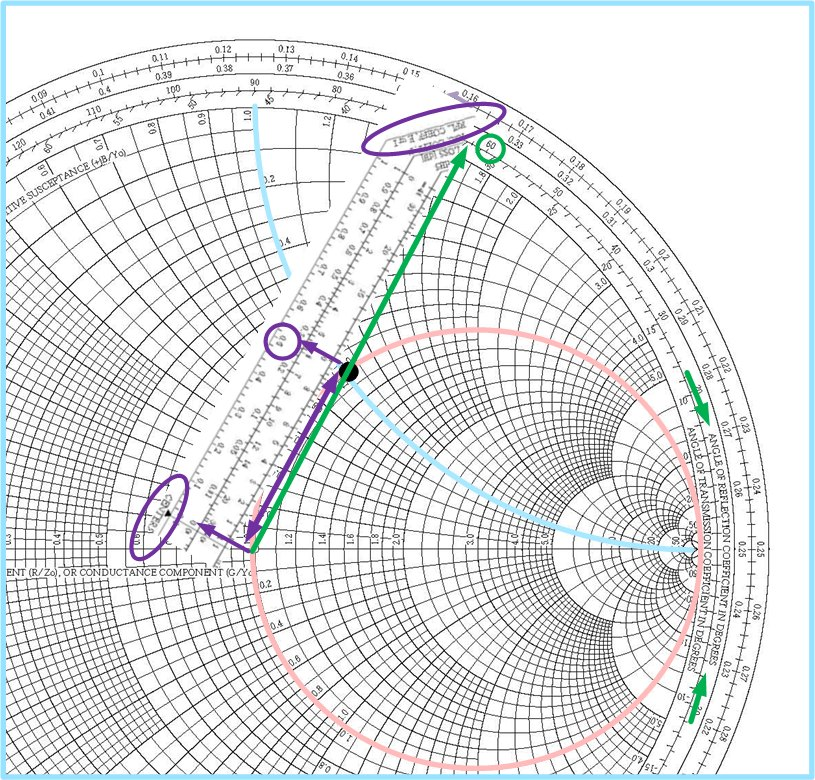
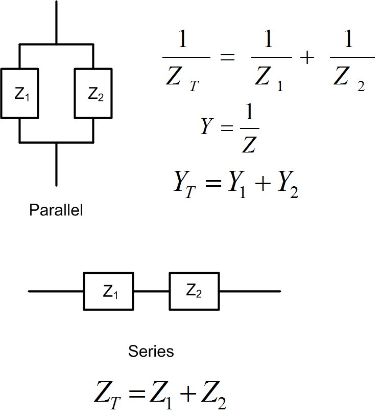

Figure 1: Examples of location of reflection coefficient on the Smith Chart.
Smith Chart is a handy tool that we use to visualize impedances and reflection coefficients. Lumped element and transmission line impedance matching would be challenging to understand if we could not use Smith Charts. Simulation software such as ADS and measurement equipment, such as Network Analyzers, use Smith Chart to represent simulated or measured data. Smith Chart at first looks like Black Magic, but it is a straightforward and useful tool that will help us understand impedance/admittance transformations and transmission lines better. In essence, Smith Chart is a unit circle centered at the origin with a radius of 1. Smith Chart is used to represent the reflection coefficient graphically. The real and imaginary axis of reflection coefficient (the Cartesian coordinates) are not shown on the actual Smith Chart. However, the center of the Smith Chart is where the origin of the coordinate system would be. We usually represent the reflection coefficient in polar coordinates, with a magnitude and an angle. Magnitude is the distance between the point and the origin, and the angle is measured from the x-axis. An example location of several reflection coefficients is given in Figure scex. If you do not see why the points are positioned as shown, review the polar representation of complex numbers.
Figure scswr1, scswr circle, and line represent all points on the Smith Chart that have constant magnitude or angle of the reflection coefficient. It is challenging to measure impedances directly at high frequencies, as it is difficult to measure (or sometimes even define) voltage and current. To measure impedances, engineers use Network Analyzer shown in Figure hp8510.

Since reflection coefficient and impedance are related through Equation eqnreflectioncoefficient, we can find impedance that corresponds to the reflection coefficient, Equation eqnimpedancerc. In other words, every point on the Smith Chart represents one reflection coefficient and one impedance .
Figures scresistance- screactance shows circles on the Smith Chart that represent constant (normalized) reactances, and resistances. Figure scimpedance, shows how to find . This impedance is at a point where the circle of constant resistance crosses the circle of constant reactance . Figure scgammafromZ shows how to find the reflection coefficient if normalized load impedance is given. Measure the distance between the origin using the scale ”Reflection Coefficient E or I” on the Smith Chart’s bottom to find the magnitude of the reflection coefficient. To find the angle of the reflection coefficient, we read the scale ”Angle of Reflection Coefficient” on the Smith Chart’s perimeter, shown in green. The reflection coefficient is therefore , which is close to the actual value . If we use a ruler and compass, and a nicely sharpened pencil, we will get exactly the right answer. Try it out!




Impedance’s real part is called resistance R, and the imaginary part is called reactance X. Admittance’s real part is called conductance, and the imaginary part is called susceptance. It is easier to add impedances when elements are in series. It is easier to add admittances when elements are in parallel, see Figure impadmtrans because we add real and imaginary parts separately. Smith Chart in Figure scadmimp has both impedance and admittance circles on it. This way, we can use Smith Chart to read off the values for equivalent impedance or admittance when we add impedances or admittances in parallel or series, which is useful in impedance matching that we will talk about in the next chapter.
